Recetas
-
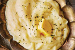
Puré de papas
+
- 4 papas
- 2 tazas de leche
- 5 cucharadas de mantequilla
- Hornea las papas durante una hora y media o hasta que al insertar un cuchillo las sientas suaves.
- Calienta la leche con la mantequilla en una olla amplia.
- Parte las papas, pélalas, aplasta la pulpa y métela en la batidora. Añade poco a poco la leche y la mantequilla hasta integrar completamente, salpimienta y sirve.
-
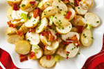
Ensalada de papa con tocino ahumado
+
- 400 g de papa
- 200 g de tocino ahumado
- 4 cdas. de cebolla de verdeo
- 4 cdas. de mayonesa
- 4 cdas. de mantequilla
- Hierve las papas en agua con sal desde frío hasta que estén suaves.
- Escurre y corta a la mitad, saltea con la mantequilla y salpimenta.
- Dora el tocino y trocea, mezcla con las papas, cebolla de verdeo y mayonesa. Rectifica la sazón y disfruta.
-
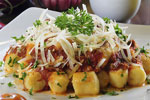
Ñoquis de papa con boloñesa
+
- 2 cebollas
- 2 kg de tomates
- Sal y pimienta al gusto
- 1 hoja de laurel
- 200 cc de vino tinto
- 3 dientes de ajo
- 50 g de perejil
- Aceite de oliva
- Sémola, cantidad necesaria
- Sal y pimienta al gusto
- 1 kg de puré de papas
- 300 g de harina
- 2 yemas de huevo
- Nuez moscada al gusto
- Prepare un puré con las papas cocidas al vapor, deje bajar la temperatura, condiemente con sal, pimienta y nuez moscada, agregue las yemas y tome la masa incorporando harina de a poco.
- Haga rollitos sobre la mesada previamente enharinada, corte los ñoquis de 2 cm aproximadamente y si lo desea páselos por un tenedor o marcador para darles forma.
- Colóquelos en una bandeja espolvoreados con sémola. Reserve.
- Incorpore y rehogue el ajo picado y la cebolla.
- Cuando las verduras estén tiernas desglace con el vino tinto y reduzca.
- Coloque la hoja de laurel y el tomate pelado y sin semillas.
- Salpimiente y cocine por espacio de 45 minutos a 1 hora a fuego lento.
- Agregue el perejil picado y rectifique los condimentos.
- Cocine los ñoquis en abundante agua con sal, cuando suban a la superficie, cuélelos y sartenee junto con las salsa.
- Sirva inmediatamente.
-
Causa Limeña
+
- 1.5 kg de papa
- 3 cdas. de aceite
- 2 cdas. de limón
- 5 cdas. de pasta de ají amarillo
- Sal al gusto
- Pechuga de pollo desmenuzada
- 3 cdas. de mayonesa
- 1 limón
- 1/2 diente de ajo rallado
- Sal y pimienta al gusto
- Huevos, cantidad necesaria
- 1 palta
- Lechuga, cantidad necesaria
- En una olla, agregar las papas bien lavadas, cubrir hasta la mitad con agua y las cocinamos por 15 a 20 minutos a fuego medio.
- Pelar y prensar las papas en caliente, reservar y dejar enfriar.
- En un recipiente grande, agregar la papa prensada fría, añadir 5 cucharadas de pasta de ají amarillo, 3 cucharadas de aceite y 2 cucharadas de jugo de limón, integrar bien. Agregar sal al gusto, amasar y reservar.
- En un recipiente, agregar 3 cucharadas de mayonesa, el jugo de 1 limón, 1/2 diente de ajo rallado, 1 pechuga de pollo desmenuzada, sal y pimienta al gusto. Integrar y reservar.
- Dentro un molde rectangular o circular, agregar una primera capa de causa, distribuir uniformemente, agregar palta cortada en láminas, cubrir con el relleno de pollo.
- Cubrir con otra capa de causa, nivelar con la ayuda de un cuchillo o espátula.
- Servir con huevos y lechuga al gusto.
-
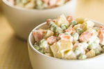
Ensalada rusa
+
- 4 papas
- Pimienta, cantidad necesaria
- Aceite de oliva, cantidad necesaria
- Sal, cantidad necesaria
- 3 zanahorias
- 200 g de mayonesa
- Jugo de limón, cantidad necesaria
- 250g de arvejas
- Hervimos 4 papas con piel y una vez cocidas las dejamos enfriar, las pelamos y las cortamos en cubos.
- Incorporamos 3 zanahorias hervidas cortadas en cubos, arvejas frescas cocidas y condimentamos con aceite de oliva, sal, pimienta y mayonesa para unir los ingredientes.
- Terminamos con jugo de limón.
-
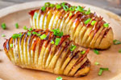
Papas Hasselback con bacon
+
- 2 tiras de bacon congelado, cortado en cruz en 8 ó 9 pedazos
- 4 papas
- 6 cdas. de mantequilla
- 2 cebollas de verdeo picadas
- Sal y pimienta al gusto
- Precalienta el horno a 350 °F y pon a hervir agua con una cucharada de sal en una cazuela grande.
- Corta las papas en rodajas de 1/8 de pulgada (3 mm) con un cuchillo afilado pero con mucho cuidado, deteniéndote 1/4 de pulgada (6 mm) antes de llegar abajo.
- Pon a hervir las papas 4 minutos, sácalas con una espumadera y déjalas refrescarse unos minutos en una bandeja resistente al horno.
- Sécalas y coloca pedazos de bacon entre las rueditas, dejando que se salgan un poquito arriba. Ponle por encima un tercio de la mantequilla derretida y salpimiéntalas.
- Mételas al horno 2 horas. Pasada 1 de ellas, ponle por encima otro tercio de la mantequilla derretida.
- Cuando falten 10 minutos para completar las 2 horas, pon a derretir el resto de la mantequilla y agrega las cebollas de verdeo. Y cuando les falten 5 minutos, vierte la mantequilla con cebollas de verdeo sobre las papas y devuélvelas al horno.
-
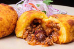
Papa rellena de carne
+
- 1 kg de papa
- 1 cda. de harina
- 1/2 kg de carne picada
- 1 cebolla morada
- 2 tomates
- 1 cda. de ajo picado
- 2 cdas. de ají panca
- 1 cda. de orégano
- 1 cda. de comino
- 6 aceitunas negras picadas
- 100 g de pasas
- 3 huevos duros
- 1 huevo batido
- 1/4 de taza de harina
- Sal y pimienta al gusto
- Aceite vegetal, cantidad necesaria
- Pon a calentar una olla con un chorrito de aceite. una vez esté bien caliente pon a sofreír la cebolla hasta que se ponga transparente.
- Luego agrega el ajo. Remueve y deja que se dore.
- Seguidamente incorpora la carne picada. Mezcla y deja sofreír por 5 minutos.
- Agrega el tomate picadito en trozos pequeños y deja cocinar por 2 minutos.
- Sazona con una pizca de sal y pimienta. También agrega el ají panca, el orégano y el comino. Remueve.
- Tapa la olla y baja el fuego. Deja que la carne se cocine poco a poco durante unos 10 minutos.
- Por último, agrega los huevos cocidos previamente picados en cuadritos, las pasas y las aceitunas. Mezcla y retira del fuego. Deja enfriar.
- El siguiente paso es poner a cocinar las papas. Coloca a cocinar las papas en una olla con abundante agua. Deja cocinar hasta que las papas estén blanditas, esto dependerá del tamaño y del tipo de papa. Si notas que alguna está listas y otras no, ve retirándolas.
- Una vez listas todas las papas, debes pelarlas y colocarlas en un recipiente grande para proceder a triturarlas, para ello puedes utilizar un tenedor o un prensa papas. Trata de hacer este paso con las papas calientes para que la masa se forme fácilmente.
- A la misma debes colocarle una pizca de sal y pimienta y la cucharadita de harina. Mezcla y amasa hasta obtener una masa homogénea y suave. Deja enfriar.
- Cuando la masa esté fría es momento de empezar a armar los bollos. Cubre tus manos con un poco de harina y agarra una porción de la masa, aplánala y forma un óvalo.
- Justo en el medio coloca una cucharada del relleno de carne y empieza a cerrar con mucho cuidado. Con la ayuda de las palmas de las manos forma una bolita.
- Realiza el mismo procedimiento hasta obtener todas las papas rellenas con carne que sean posibles.
- Posteriormente pasa cada papa rellena por harina, huevo batido y nuevamente harina.
- Llévalas unos 5 minutos al refrigerador para que se compacten.
- Pon a calentar una sartén con abundante aceite.
- Fríe las papas cuidando que queden bien doradas por toda la superficie.
- Retíralas y ubícalas en una bandeja con papel absorbente para retirar el exceso de grasa.
- Sirve y acompaña con salsa criolla.
-
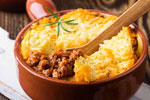
Pastel de papas
+
- 1 kg de papas
- 1/2 kg de carne picada
- 1 cebolla
- 1/2 morrón
- 2 dientes de ajo
- 1 cubito de caldo
- Ajo en polvo
- 25 g de manteca
- 1 chorrito de leche
- Aceite
- Pimentón, nuez moscada, sal y pimienta al gusto
- Cortar las papas en cubos y ponerlas a hervir con sal.
- Picar la cebolla, el ajo y el morrón.
- Calentar el aceite en una olla o sartén y sofreir la cebolla, el morrón y los ajos.
- Cuando la cebolla está transparente, agregar la carne y sofreirla mientras se deshace con una cuchara.
- Salpimentar, agregar el cubito de caldo, el ajo en polvo, el morrón y cocer la carne unos 15 minutos.
- Una vez que las papas estén hervidas, hacer en caliente un puré con la manteca y la leche. Salpimentar.
- Puede agregarse al relleno de carne huevos picados, aceitunas verdes picadas o pasas de uva.
- Poner en una fuente para horno una base de puré, agregar por encima el resto del relleno (la carne), dejar que se entibie un poco y colocar otra capa de puré. Para distribuirlo, se moja la cuchara en agua fría.
- Llevar a horno fuerte unos 15 a 20 minutos, o hasta que la parte de arriba esté crocante.
-
Croquetas de papa rellenas de queso crema
+
- 1 kg de papa, cocidas y peladas
- 190 g de queso crema
- 1/4 tazas de crema
- 2 cdas. de fécula de maiz
- 5 cdas. de perejil, finamente picado
- 2 cdas. de consomé en polvo
- 1 taza de pan rallado
- 2 tazas de harina
- 2 huevos
- 4 tazas de aceite, para freír
- Aplastar las papas con la mitad del Queso Crema, la crema, la fécula de maíz, el perejil y sazonar con el consomé.
- Formar bolitas con las manos y rellenarlas con trocitos del Queso Crema restante.
- Pasar por harina, huevo y pan rallado y freír.
- Servir acompañando una carne.
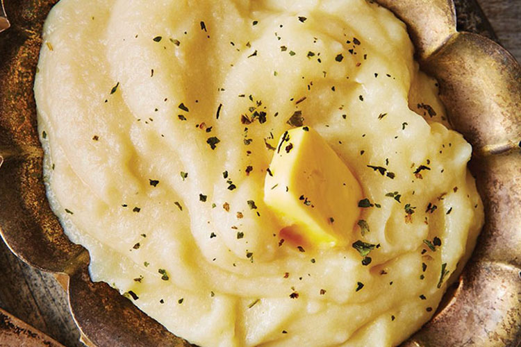
Ingredientes:
Papa-so a paso:
Ingredientes:
Papa-so a paso:
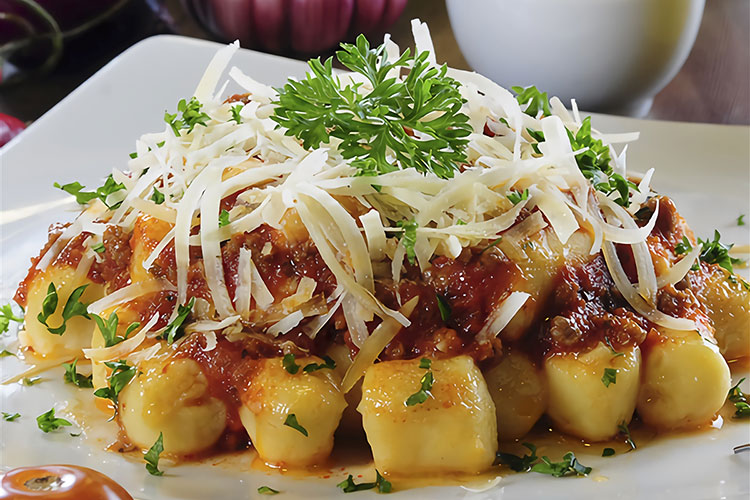
Ingredientes:
Para la salsa
Para los ñoquis
Papa-so a paso:
Para los ñoquis
Para la salsa
Para el armado
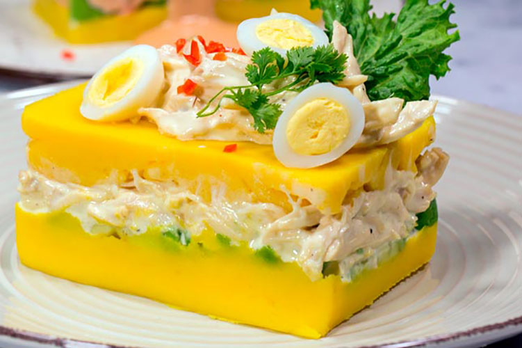
Ingredientes:
Para la causa
Para el relleno
Para el armado
Papa-so a paso:
Para la causa
Para el relleno
Para el armado
Ingredientes:
Papa-so a paso:
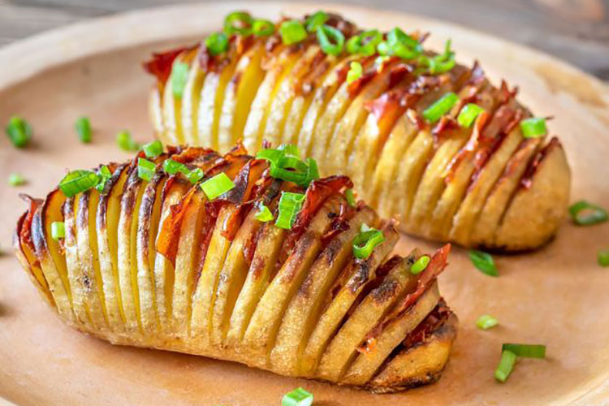
Ingredientes:
Papa-so a paso:
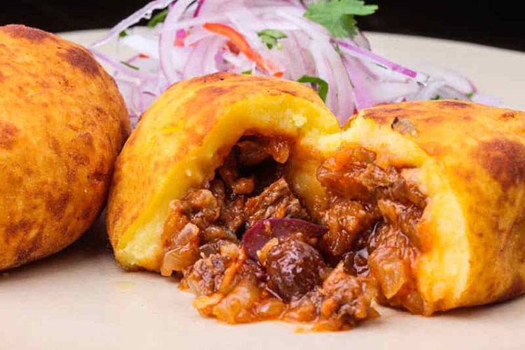
Ingredientes:
Papa-so a paso:
Para el relleno
Para la masa
Para el armado
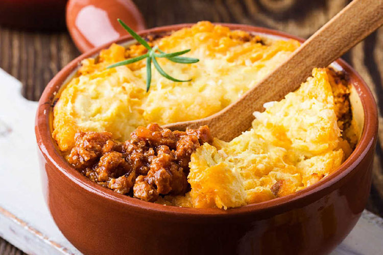
Ingredientes:
Papa-so a paso:
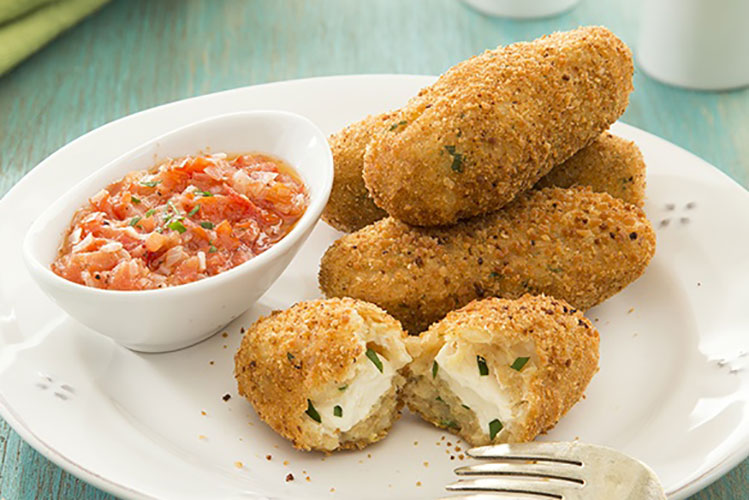